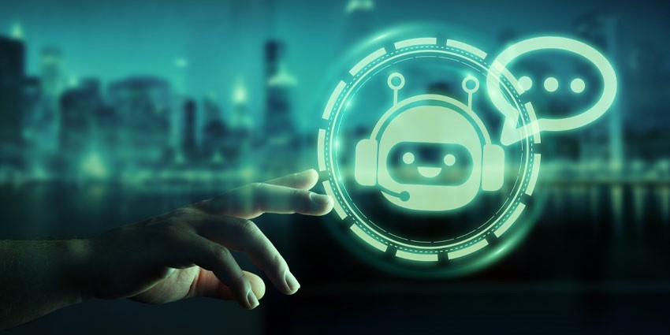
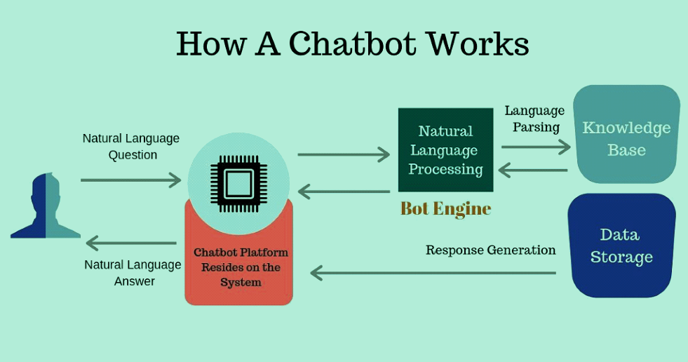

Bot basically is the short form of a so called Robot. This is also recognized as a web Ro2bot or simply as internet bot. It is normally a conversational software application which runs automated tasks over the internet. These are making a trending impact over the web by making our lives both professional and personal, pretty much efficient. More than half of today's web traffic is made of bots.
Essentially, most of the businesses are actively using chatbots for their rapid communication with their clients and customers. These are programmed in such a way that they can read, understand, analyze the queries typed in by the clients/customers and can able to answer right away.
If we look at chatbot from the internal working point of view, then it works majorly through adopting three classification methods. They are- Pattern matchers, Algorithms, and Artificial Neural Networks.
Today, people are still fascinated by how chatbots are made and understand the intent of the customer. Generally in Companies, the chatbot are first trained with actual data and then make logs of that. Using that conversation logs, Developers try to analyze what the customer is trying to ask and what does that mean. And then with the help of Machine-learning models and tools they compare the questions that customer asks and answers, with well-suited answer.
Let us say, if a client ask "Where is my Invoice list?" and "I haven't received any Invoice list" performs the same thing. So the chatbot will answer the query with the same thing. Moreover, chatbots had evolved in such a way that it outpaced the situations of waiting in lines or staying on-hold while phone calls, hence accelerating the development and growth of Business.